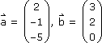
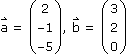
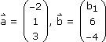
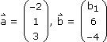
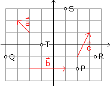
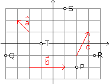
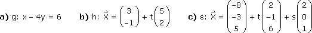
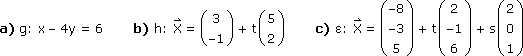
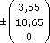
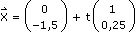

Vektorrechnung - Aufgaben 2
1.
Bestimme den Winkel zwischen den Vektoren x` = a` + 4b` und y` = 5a` – 2b`, wenn


2.
Bestimme b1 so, dass a` und b` aufeinander normal stehen, wenn


3.
Ein Vektor a` aus dem ersten xy-Quadranten schließt mit der x-Achse 36° ein, ein Vektor b` aus dem ersten yz-Quadranten schließt mit der y-Achse 42° ein. Wie groß ist der Winkel zwischen den beiden Vektoren?
4.
Welcher Vektor der xy-Ebene ist orthogonal zu a` = 3e`1 – e`2 + 2e`3 und dreimal so lang?
5.
Berechne den Abstand, den der Punkt P von der Geraden g[A, B] hat, wenn a) A(–5|–1), B(4|5), P(–2|6), b) A(5|2|–1), B(6|–2|5), P(4|0|1).
6.
Berechne den Abstand, den der Punkt P(5|4|–4) von der Ebene ε[ A(4|–2|1), B(–6|–3|2), C(9|2|1) ] hat.
7.
Berechne den Abstand der windschiefen Geraden g[ A(8|–1|4), B(5|6|2) ] und h[ P(3|–2|6), Q(–3|3|1) ].
8.
Bestimme – wenn möglich – t 
 , sodass
a) P` = ta`,
b) R` = Q` + tb`,
c) T` = S` + tc`.
, sodass
a) P` = ta`,
b) R` = Q` + tb`,
c) T` = S` + tc`.

, sodass
a) P` = ta`,
b) R` = Q` + tb`,
c) T` = S` + tc`.

9.
Wandle von Koordinatenform in parametrisierte Vektorform bzw. umgekehrt um:


Ergebnisse:
1. 74,5° 2. –3 3. 64,1° 4.  5. a) 4,16 b) 1,48 6. 5,65
7. 4,93 8. a) –2 b) 2,5 c) nicht möglich 9. a) 
b) 2x – 5y = 11 c) x – 10y – 2z = 12